Project Vikas
01


InAmigos Foundation is empowering lives through education, environmental sustainability, animal welfare, women empowerment, youth development, and impactful social initiatives.
InAmigos Foundation was founded on September 23, 2020, by Mr. Govind Shukla with a vision to create meaningful impact through education, awareness campaigns, sustainability drives, women empowerment initiatives, and community support activities. We believe in building a compassionate future where individuals work together to uplift communities and inspire social transformation. Through collective action, volunteering, and awareness, we are shaping stronger communities and helping individuals become changemakers for society.
Every project at InAmigos focuses on improving lives, empowering communities, and spreading awareness across India.
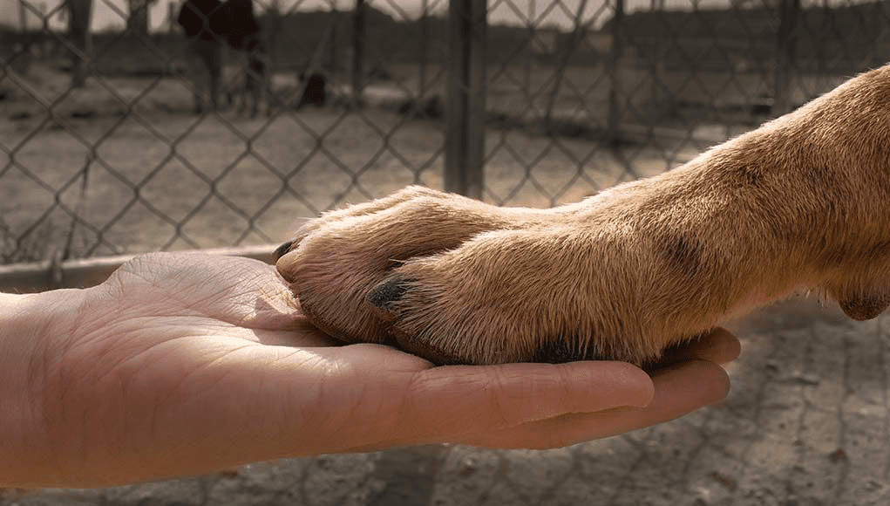

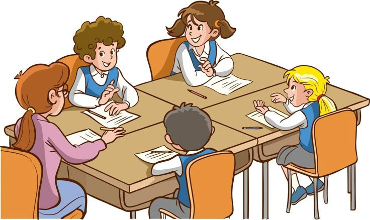
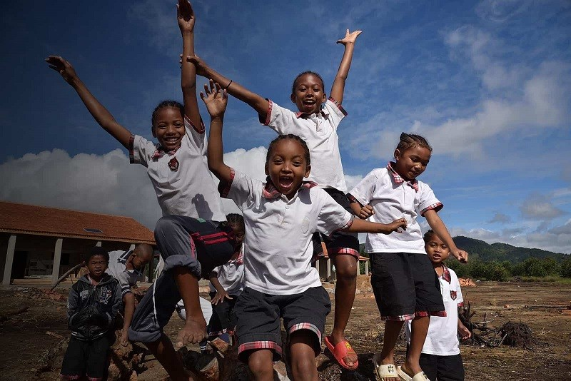
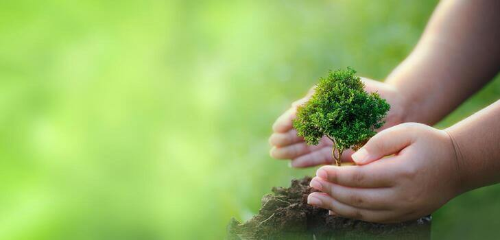

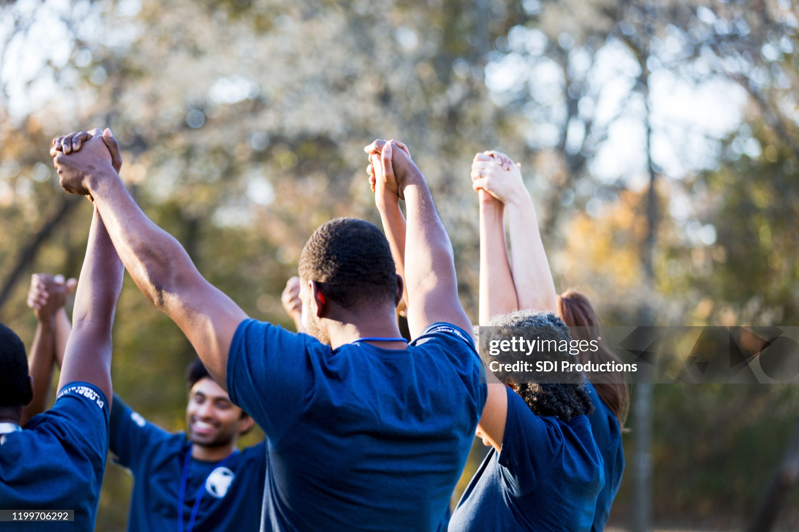

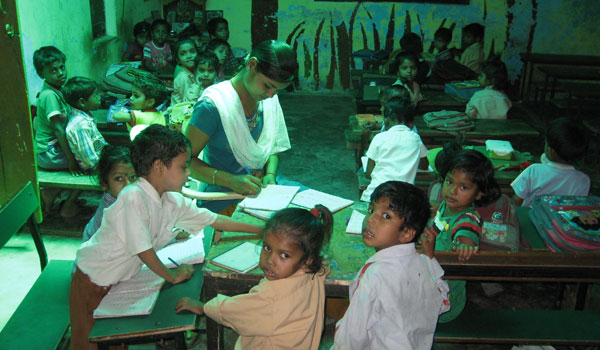
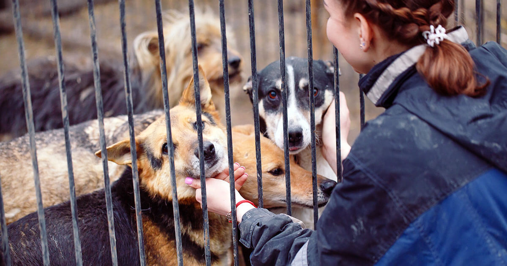
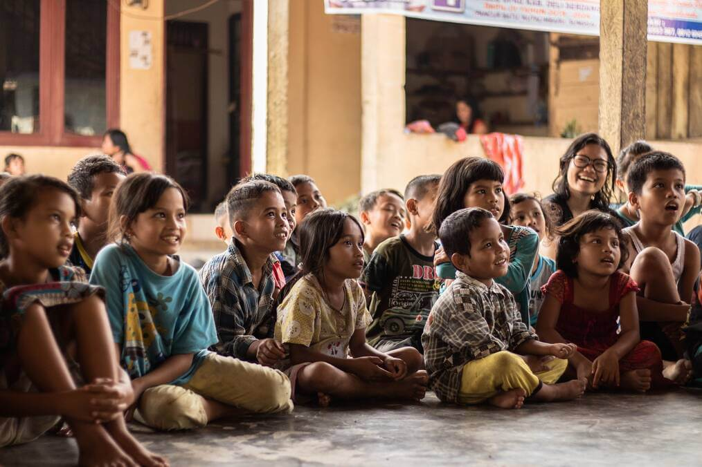
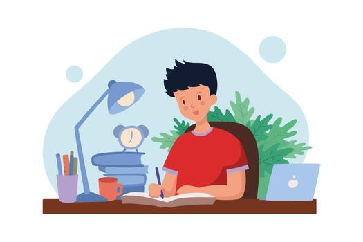
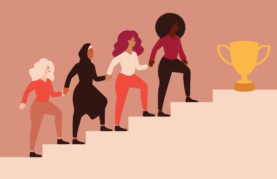

Water is essential for life, yet millions worldwide face water scarcity and pollution. InAmigos Foundation is organizing an interactive event to educate and inspire meaningful action toward a water-secure future.
Happiness is not just a feeling; it is a way of life. This celebration explores well-being, kindness, and positive change, showing how small actions can make a big impact on people and society.
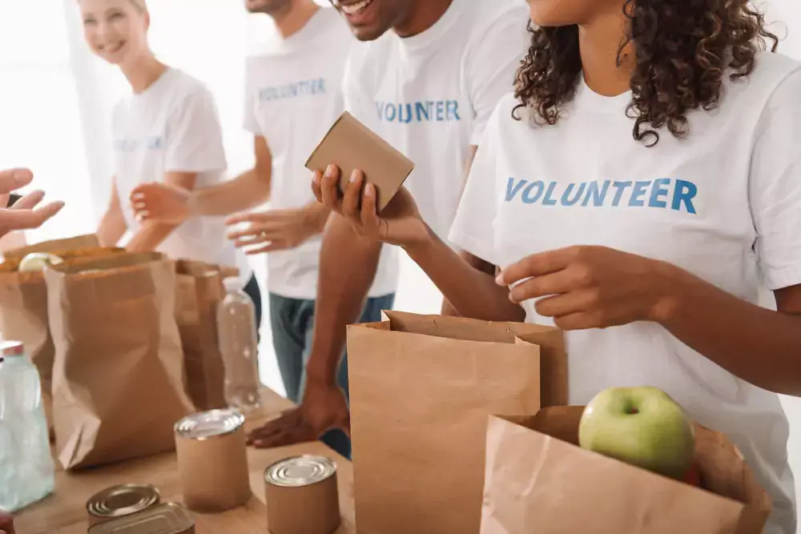
This global initiative highlights the crucial role women play in scientific advancement and innovation while encouraging young girls to pursue STEM careers in an inclusive environment.
We work across education, food and clothing support, animal welfare, women empowerment, youth skill development, health awareness, and environmental action. Each initiative is built to solve a real community need while helping people participate in practical, measurable change.
Yes. Volunteers can support both on-field and remote work. You can help with awareness campaigns, content, research, fundraising, coordination, event support, social media, or direct community outreach depending on your time, location, and skills.
InAmigos Foundation is registered under Section 8 and licensed by the Central Government. It is 80G and 12A certified, CSR-1 registered, IAF ISO 9001:2015 certified, and recognized with NGO Darpan - NITI Aayog.
We look at urgency, local need, available volunteers, partner support, and expected impact. Some projects respond to immediate needs like food, clothing, or rescue work, while others build long-term change through education, skills, sustainability, and awareness.
Yes. Since the foundation is CSR-1 registered, companies can collaborate on structured social responsibility projects. CSR partnerships can support education, women empowerment, sustainability, animal welfare, relief drives, and youth skill development.
Contributions are directed toward project needs such as meals, clothing, learning materials, awareness drives, rescue support, plantation activities, training sessions, and event execution. The goal is to keep every contribution connected to visible community work.
Yes. Project Vikas is focused on youth development and learning opportunities. Students and interns can contribute through research, operations, digital outreach, event support, fundraising, content, design, and community engagement roles.
Choose a cause, lend your skills, and help InAmigos turn everyday effort into real community impact.